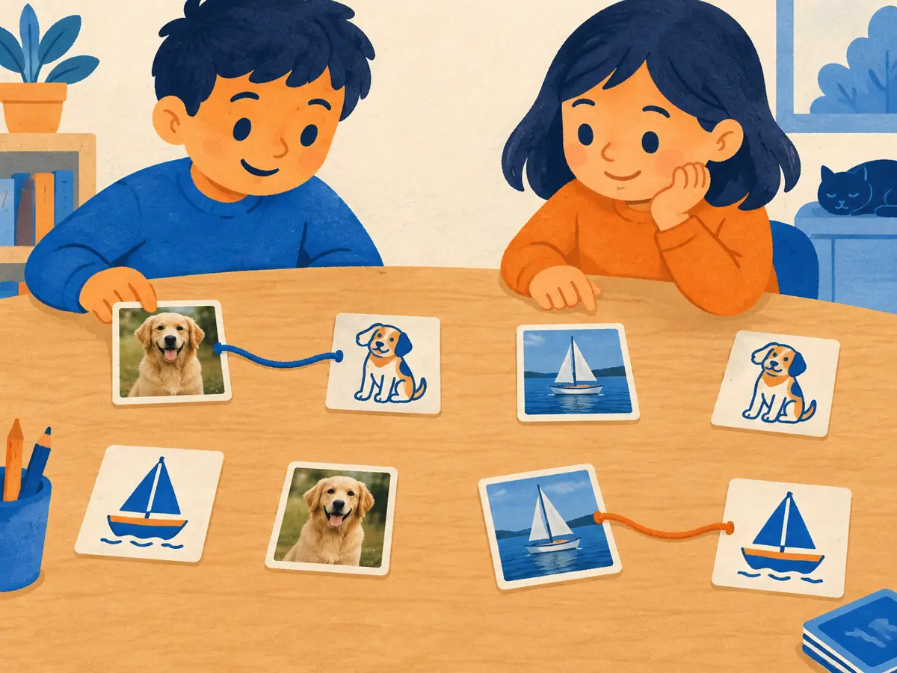

Contrastive learning & CLIP
Labelling millions of images by hand is slow and caps a model at a fixed list of classes. The web already pairs billions of images with text. CLIP learns from those pairs with one simple game: which caption goes with which image? The result is a shared space where pictures and words can be compared directly.
By the end you can
- Explain contrastive learning and compute CLIP's symmetric InfoNCE loss for a tiny batch.
- Predict what the temperature $\tau$ does to the softmax and the loss.
- Use a CLIP-style model for zero-shot classification, and say where these encoders are used today.
Guess first. Being wrong now helps the right answer stick.
You have 400 million images with captions but no class labels. Which training signal can you use?
- None. Image models need human class labels.
- Ask the model to output each caption's exact wording, word by word, and nothing else will work
- Train the model to pick each image's own caption out of a batch of captions
- Cluster the images and name the clusters by hand
After training on image–caption pairs, how could a model classify a photo into "dog", "cat" or "car" without any extra training?
- Embed the texts "a photo of a dog/cat/car" and pick the one closest to the photo's embedding
- It can't. It needs a new classifier trained on labelled examples.
- Count the pixels of each colour
- Ask it to generate a caption and search it for keywords
Learning from captions instead of labels
ImageNet (Deng et al., 2009) needed years of crowd work to label 1.28 million training images into 1,000 classes. A model trained on it knows exactly those 1,000 classes. Show it a new category, say "electric scooter", and you need new labels and a new classifier.
Meanwhile, the web is full of images with alt text and captions. They're noisy ("IMG_2041", "my weekend!") but there are billions of them, and they describe far more than 1,000 categories. Earlier work learned visual features from text, for example VirTex (Desai & Johnson, 2020) by generating captions, and ConVIRT (Zhang et al., 2020) contrastively on medical images paired with reports. CLIP (Radford et al., 2021, OpenAI) scaled the contrastive version to about 400 million image–text pairs collected from the internet.
The core idea is contrastive learning:
- Two encoders map each input to a vector: an image encoder $f$ (a ViT or ResNet) and a text encoder $g$ (a Transformer).
- A matching image–caption pair is a positive: pull their vectors together.
- Every other pairing in the batch is a negative: push those vectors apart.
The model never has to produce a caption. It only has to recognise which caption belongs to which image, among many. CLIP's authors found this several times more compute-efficient than predicting the caption's words, because the model doesn't waste effort on exact phrasing.
Explain like I'm 5

Kids play a matching game. On one side are photo cards; on the other, drawings of the same things. The job: tie a string from each photo to its drawing.
Every time they get a pair right, the two cards are pulled closer. Every wrong pair gets pushed apart. After thousands of games, the kids can match a photo to a drawing they've never seen.
Where it breaks: CLIP doesn't move cards on a table. It adjusts millions of numbers so that matching pictures and sentences end up as nearby points in a shared space.
In a CLIP batch of $N$ image–caption pairs, how many negatives does each image get?
- None; only positives are used
- $N - 1$: every other caption in the batch
- One, chosen at random
One batch, one matrix, one loss
Take a batch of $N$ pairs. Encode all images and all captions, scale every vector to length 1, and compare every image with every caption. Step through it:
Write $s_{ij}$ for the cosine similarity between image $i$ and caption $j$. CLIP's loss is the average of two cross-entropies, one per direction:
$$\mathcal{L} = \frac{1}{2N}\sum_{i=1}^{N}\big(\ell_i^{\text{img}} + \ell_i^{\text{txt}}\big)$$ $$\ell_i^{\text{img}} = -\log\frac{e^{s_{ii}/\tau}}{\sum_{j=1}^{N} e^{s_{ij}/\tau}}$$ $$\ell_i^{\text{txt}} = -\log\frac{e^{s_{ii}/\tau}}{\sum_{j=1}^{N} e^{s_{ji}/\tau}}$$$\ell_i^{\text{img}}$ is a cross-entropy over a softmax along row $i$ (image $i$ choosing among all captions); $\ell_i^{\text{txt}}$ is one down column $i$ (caption $i$ choosing among all images). The right answer is always the diagonal, $s_{ii}$. $\tau$ is the temperature, a learned scalar. This family of losses is called InfoNCE (van den Oord et al., 2018); CLIP's is the symmetric version.
In code it's almost a one-liner: logits = img @ txt.T / tau, then the average of cross_entropy(logits, arange(N)) and cross_entropy(logits.T, arange(N)).
The details from the paper: a batch of 32,768, an image encoder that was a ResNet or a ViT (the best, ViT-L/14, was fine-tuned at 336 pixels), a 63M-parameter Transformer text encoder, and a temperature initialised at $\tau = 0.07$ and learned, with a floor at $0.01$ (a logit scale of at most 100).
Worked example
Image 1's similarities to captions 1, 2, 3 are $[0.30,\ 0.10,\ 0.20]$; caption 1 is its match. Take $\tau = 0.1$.
- Logits $s/\tau$: $[3,\ 1,\ 2]$.
- Exponentials: $e^3 \approx 20.09$, $e^1 \approx 2.72$, $e^2 \approx 7.39$; sum $\approx 30.19$.
- Softmax: $[0.665,\ 0.090,\ 0.245]$.
- Loss for this row: $-\ln 0.665 \approx 0.408$.
Same similarities $[0.30,\ 0.10,\ 0.20]$, but now $\tau = 0.05$.
- Logit for the match, $0.30/\tau$:
- Softmax probability of the match:
- Row loss $-\ln p$: (lower than 0.408: a smaller τ rewards a correct ranking more)
Why does CLIP average a row-wise and a column-wise cross-entropy?
- To make the loss twice as large
- Because the matrix is symmetric, so the two are always equal
- So that each image must pick its caption and each caption must pick its image
Temperature: how sharp is the softmax?
Cosine similarities live between −1 and 1, and in practice CLIP's scores for an image are bunched closely together (often within about 0.1 of each other). A softmax over such close numbers would be nearly uniform. Dividing by a small $\tau$ stretches the gaps: $\tau = 0.01$ turns a gap of 0.05 into a logit gap of 5.
- High $\tau$: soft, almost uniform probabilities. Mistakes and successes barely change the loss, so learning is slow.
- Low $\tau$: sharp, confident probabilities. Correct rankings give near-zero loss, but a confident mistake is punished hard.
Rather than tuning it, CLIP learns $\tau$ (as $\log(1/\tau)$) by gradient descent along with the weights. Try it below, then switch to the batch with one mix-up.
Try it: temperature and the similarity matrix
Toy cosine similarities for 4 images × 4 captions. Each cell shows a softmax probability; the orange squares are the right answers.
Why such huge batches? Each image's softmax runs over all $N$ captions, so a bigger batch gives more, and harder, negatives: in a batch of 32,768, some other caption will probably describe a similar dog. Contrastive methods generally improve with more negatives, which is why CLIP training is spread across hundreds of GPUs that share their embeddings to build the full $N \times N$ matrix.
In the "one mix-up" batch, the loss rises again when $\tau$ gets very small. Why?
- With a sharp softmax, the cat image puts nearly all its probability on the wrong caption, and $-\log$ of a tiny probability is large
- Small temperatures make cosine similarities negative
- The softmax no longer sums to 1
Zero-shot classification, and CLIP's descendants
A trained CLIP is a classifier for any list of classes, built from words:
- Write one prompt per class, such as "a photo of a dog", and embed each with the text encoder.
- Embed the image with the image encoder.
- Pick the class whose prompt has the highest cosine similarity (or take a softmax for probabilities).
With no ImageNet training images at all, CLIP's best model reached 76.2% top-1 zero-shot on ImageNet, matching the original fully supervised ResNet-50. The wording matters: the template "A photo of a {label}." beat the bare class name by about 1.3 points, and averaging the embeddings of 80 templates added about 3.5 more. Zero-shot CLIP was also far more robust than ImageNet-trained models on sketches, renditions and other shifted versions of the same classes.
It has blind spots. CLIP is weak at counting objects and at spatial relations ("a mug left of a laptop"), and it often treats captions like a bag of words (Yuksekgonul et al., 2023). Web data also carries social biases, which the CLIP paper itself measured.
The recipe spread quickly:
- ALIGN (Jia et al., 2021, Google) used about 1.8 billion noisier image–alt-text pairs with almost no filtering, showing that scale can make up for noise.
- OpenCLIP reproduced CLIP in the open, trained on the public LAION-5B dataset (Schuhmann et al., 2022).
- SigLIP (Zhai et al., 2023) replaced the softmax with a sigmoid: every image–caption pair becomes its own yes/no question, $-\log\sigma\big(z_{ij}(t\,s_{ij} + b)\big)$, where $z_{ij} = 1$ on the diagonal and $-1$ elsewhere, $t$ is a learned scale (like $1/\tau$) and $b$ a learned bias. With no normalisation over the whole batch, it is simpler to distribute and works well even at smaller batch sizes.
What is the main change SigLIP makes to CLIP's loss?
- It removes the text encoder
- It scores each image–caption pair independently with a sigmoid, instead of a softmax over the whole batch
- It uses only positive pairs
Explain how CLIP is trained from a batch of image–caption pairs, and how it then classifies images it was never labelled for.
In CLIP's $N \times N$ similarity matrix, which entries are the "correct answers" for the cross-entropy?
- The largest entry in each row, whatever it is
- The first column
- All entries above 0.5
- The diagonal: image $i$ with caption $i$
arange(N) as the targets.In M1.5, lowering the sampling temperature made an LLM's next-token distribution more peaked. What does lowering CLIP's $\tau$ do?
- The opposite: it flattens the softmax over captions
- The same thing: logits are divided by $\tau$, so the softmax over captions gets sharper
- It changes which caption has the highest similarity
- Nothing, because similarities are already between −1 and 1
Why does zero-shot accuracy improve when you use the prompt "a photo of a {label}." instead of the bare label?
- Training captions are sentences, so a sentence-like prompt lands closer to where matching images were trained to be
- Longer text always has higher similarity
- The word "photo" is a special token
- It doesn't; prompts make no difference
A team doubles its CLIP batch size from 16k to 32k pairs. What changes for each image's loss term?
- It gets two positives instead of one
- Nothing, since the loss is averaged
- Its softmax runs over twice as many captions, so it faces more (and on average harder) negatives
- The temperature is halved automatically
Key takeaways
- Contrastive learning pulls matching pairs together and pushes the rest of the batch apart; no class labels needed.
- CLIP scores an $N \times N$ cosine-similarity matrix with a symmetric InfoNCE loss: cross-entropy on rows and columns, with the diagonal as the target.
- A learned temperature $\tau$ sets how sharp the softmax is: low $\tau$ rewards confident correct matches and punishes confident mistakes.
- Prompts like "a photo of a dog" turn CLIP into a zero-shot classifier; ALIGN scaled the data, SigLIP swapped in a sigmoid loss.
- CLIP-style encoders are the text side of many image generators and the vision side of many multimodal LLMs.
Implement the symmetric InfoNCE loss in NumPy, check it against PyTorch, train two tiny linear "encoders" to align paired toy embeddings, and classify zero-shot by nearest text embedding. About 25 minutes, free, runs in your browser.
Add this lesson's cards to your spaced-review deck.